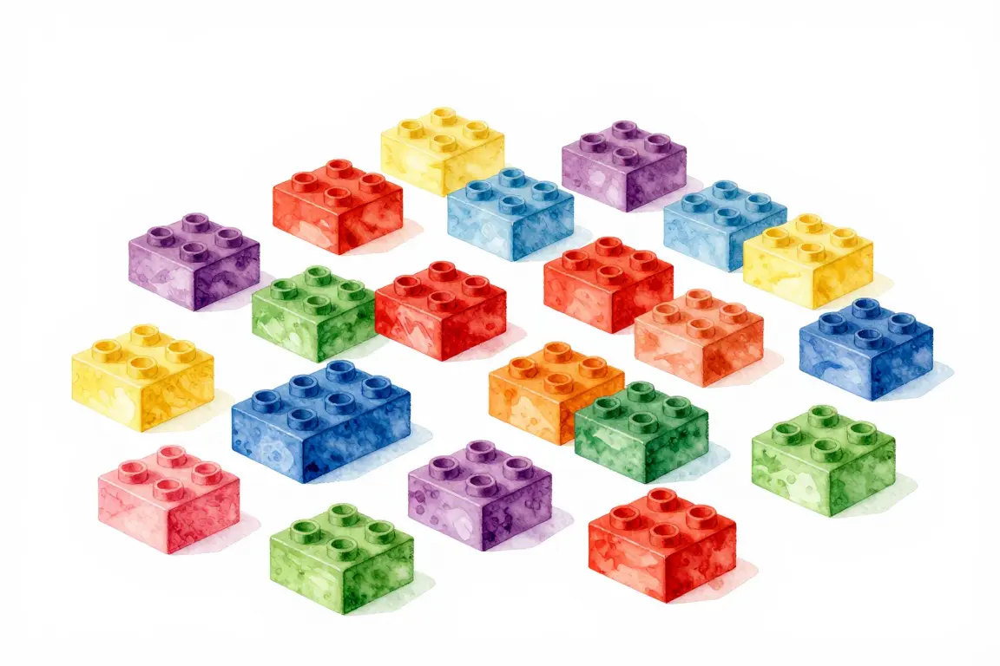
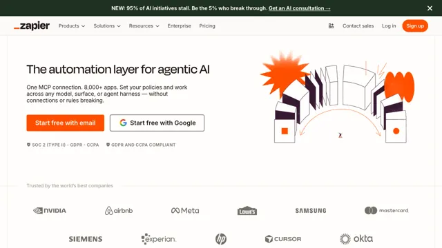
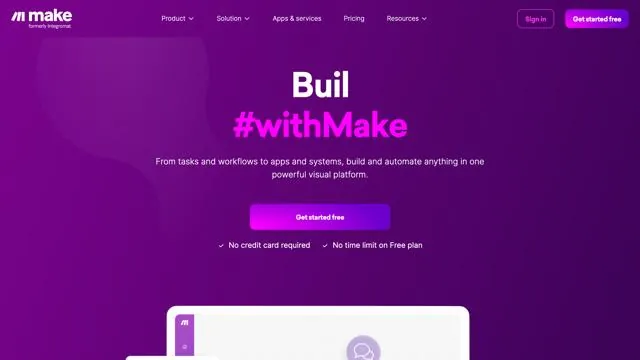
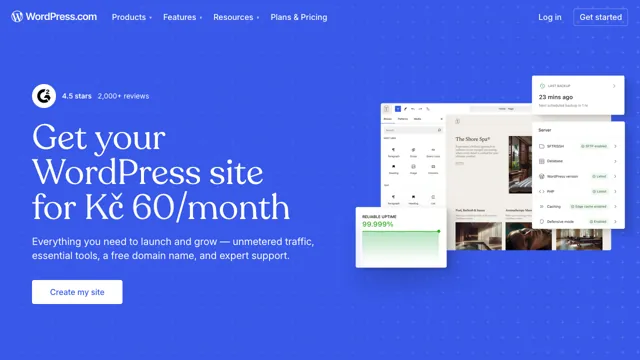
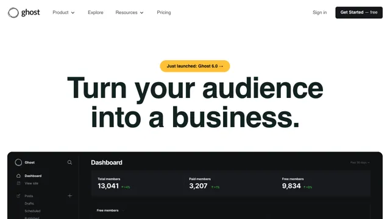
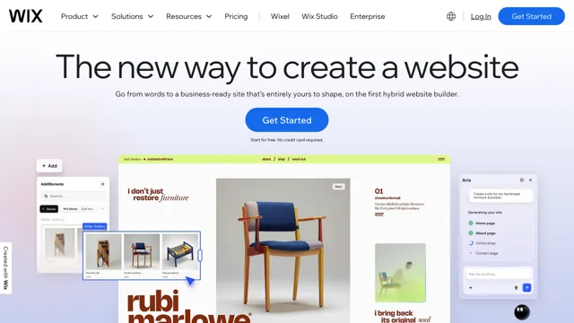
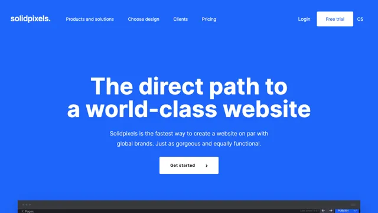
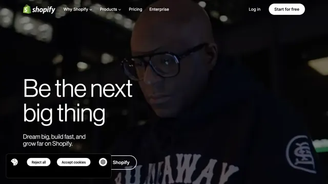
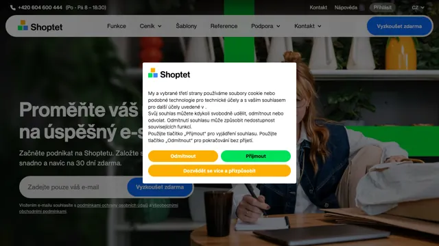

Programování „bez kódu“#
Hotová řešení, polotovary, platformy. Kdy je použít? A má vlastně smysl učit se programovat, když se dá dnes leccos vytvořit pouhým klikáním?

Co je „low-code“ nebo „no-code“#
Těmito výrazy se v posledních letech nazývají „hotová řešení“. Polotovary nebo služby, které se pouze vezmou, poskládají jako stavebnice. Něco se pokliká v administraci, a je to připravené k použití. V zásadě jde o přístup, který tu s námi je už dlouho, jen to donedávna nemělo tyto souhrné názvy.
- No-code znamená, že jen skládáš a nastavuješ, ale nic neprogramuješ.
- Low-code znamená, že trochu programuješ, ale je to skoro nic oproti tomu, kdyby se totéž programovalo klasickou cestou.
Platforma versus „open source“#
Při použití různých řešení se dá vybrat buď nějaká platforma, nebo tzv. open source řešení.
Platformu provozuje jedna firma a člověk je pak odkázaný na to, co ta firma udělá. Tomu se říká vendor lock-in, uzamčení do určitého ekosystému, do jedné služby, do jednoho řešení. Má to i svůj článek na Wikipedii. Příkladem platformy může být Substack.
Oproti tomu open source řešení jsou zdarma, mají otevřený kód a můžeš si je s trochou snahy nasadit kdekoliv. Pokud se vyznáš v technologiích, ve kterých jsou vytvořené, tak si je můžeš i jakkoliv upravit. Stará se o ně komunita dobrovolníků, takže máš sice vše zdarma, ale nemáš také nic garantováno. Příkladem může být Ghost.
Kolem úspěšných open source projektů se ale většinou motá alespoň jedna firma, která totéž umí nabídnout jako službu. Provozuje open source řešení, ale má tam vše vyladěné a nabízí k tomu i podporu. Za to si nechává platit, jako by to byla již zmíněná platforma, ale výhodou je, že od ní lze kdykoliv odejít k jinému poskytovateli téhož řešení. Nebo se dá vyhrnout rukávy a provozovat si to vlastními silami. Příkladem je firma Ghost.
Proč to používat#
Vytvořit dnes od základů obstojný internetový produkt je práce pro tým profesionálů. Dělá se to zpravidla pouze v případě, kdy má zadavatel speciální požadavky a tedy se mu vyplatí vytvářet něco zcela nového.
Pokud začínáš a potřebuješ blog nebo e-shop, s největší pravděpodobností nadstandardní požadavky nemáš a nemá pro tebe smysl se učit programovat kvůli něčemu, co lze za dvě odpoledne „naklikat“. Používání polotovarů je v IT zcela běžné a dělají to i lidé, kteří by danou věc naprogramovat dokázali:
-
Je to ekonomičtější. Není potřeba vymýšlet znovu kolo. Místo stovek hodin práce programátorů se něco jen pokliká, poladí, nastaví, a je to.
-
Lze to lépe udržovat. Ať už řešení v počátku nastaví kdokoliv, jeho standardizovaná povaha umožňuje, aby se v něm posléze zorientoval i někdo jiný. Zároveň tvůrci polotovaru vydávají stále nové verze, které např. ošetřují bezpečnostní a jiné chyby.
-
Je to kvalitnější. Neplatí jako u vaření, že polotovar je horší, než vlastní výtvor. V tomto případě šéfkuchaři z celého světa roky ladili a vylepšovali něco, co má lákavou barvu, zdravé přísady a vysoké nutriční hodnoty. Všeho je tam tak akorát, aby to chutnalo většině lidí. Sebelepší jednotlivec by těžko dosáhl stejného výsledku.
-
Je to bezpečnější. Tady platí předchozí bod dvojnásobně. V oblasti přihlašování, uchovávání hesel apod. není radno vymýšlet nic na koleně, protože je téměř jistá šance, že jednotlivec nedomyslí všechny hrozby. Polotovary mají toto vyřešené dle oborových standardů a pokud se přece jen najde bezpečnostní díra, tvůrci se ji snaží hned zalepit.
Pokud se učíš programovat a chceš si to na tvorbě e-shopu jen vyzkoušet, tak v pohodě, klidně si do šuplíku programuj vlastní e-shop. Pokud je ale tvým cílem provozovat použitelný e-shop, neprogramuj si jej, nevynalézej kolo, použij něco hotového. Tento web sice chce lidem ukázat cestu k programování, ale ne za každou cenu, z nesmyslných důvodů.
Skládat z dílů nebo programovat?#
K čemu je dobré umět programovat věci od základů, když už polotovary existují na vše podstatné? Představ si běžné programovací jazyky jako auto a hotová řešení jako MHD. Auto je drahé, musíš jej řídit, parkovat a pečovat o něj, ale umožní ti jezdit přesně tak, jak chceš. Jezdit vlakem sice vyžaduje rozumět systému jízdenek a přesedat mezi spoji, ale i tak je to levné, jednoduché a dostatečně efektivní pro spoustu lidí. Pokud nevezeš náklad, je neekonomické jezdit autem trasu, která je dobře obsluhovaná MHD.
Stejně tak je nesmysl, aby někdo od základů programoval fotogalerii pro kosmetický salon. Ale pak jsou tady Alza nebo Rohlík, které se s běžným řešením nespokojí. Velký, složitý, nebo jinak unikátní byznys zaměstná i celý tým programátorů, kteří vše vyvíjí na míru. Úspěšnou kariéru přitom můžeš udělat v obou případech. Specialista na WordPress, jenž umí skládat weby z velkých dílů, se uživí stejně dobře jako PHP programátorka, která umí ty díly vytvořit.
Konkrétní tipy#
Tento web je o tom, jak se naučit software vyrábět od základů, takže odkazy níže neber jako nějaký skvěle zpracovaný rozcestník. Je to spíš inspirace a odrazový můstek pro další pátrání, pokud tě tohle téma zajímá. Pokud se ale vidíš spíš mezi polotovary než u psaní kódu, tak s tím ti junior.guru moc nepomůže. Zkus se na další informace poptat třeba na fóru Webtrh.
Tabulky a dokumenty#
Říká se, že nejrozšířenějším programovacím jazykem na světě jsou vzorečky v Excelu. Zní to možná jako vtip, ale není to vtip.
Možná je zbytečné učit se programovat v něčem jiném, pokud se tvá práce odehrává v tabulkách a odehrávat se v nich ještě dlouho bude. Nauč se pořádně vzorce, makra, funkce. Excel je velmi silný nástroj a jeho dobrá znalost se ti nikdy neztratí. I pokud budeš chtít později přejít k „opravdovému“ programování, znalost maker apod. ti bude sloužit jako základ, na kterém budeš moci stavět.
Podobně se dá udělat velká paráda i s Google Apps Script a automatizací Google dokumentů, které mají tu výhodu, že jsou online a mohou v sobě snadněji propojovat živá data jinde z internetu (např. aktuální kurzy měn).
Automatizace#
Pokud by se ti hodilo propojit různé internetové služby tak, aby si podle nějakého scénáře automaticky posílaly informace, i na to existují hotové nástroje. Můžeš třeba pokaždé, když se objeví platba na tvém bankovním účtu, uložit zůstatek do tabulky a následně si ještě nechat poslat zprávu na mobil.
V mluvě velkých firem se tomu říká RPA a prý je po tom dnes celkem poptávka. Následující služby umožňují takové scénáře programovat klikáním, přetahováním kurzorem a vyplňováním formulářů, tedy zcela bez psaní kódu v tradičních programovacích jazycích.

Zapier
Nejpoužívanější platforma pro automatizaci.

Make
Původně česká platforma, má napojení na mnohé české služby.
Tvorba webu, e-shopu#
Jestli chceš psát blog, provozovat e-shop nebo vytvořit webovky pro květinářství kamarádovy tety, nemusíš se nutně učit programovat. Najdi vhodnou No Code platformu nebo se nauč pracovat s nějakým open source řešením. Obojího je dnes neskutečné množství, ale tady jsou alespoň tři tipy na ty nejpoužívanější:

WordPress
Nejpoužívanější hotové řešení na weby. Platforma i open source.

Ghost
Blog s newsletterem. Platforma i open source.

Wix
Platforma, kde web vytvoříš klikáním.

Solidpixels
Česká platforma, kde web vytvoříš klikáním.

Shopify
Nejpoužívanější platforma pro vytváření vlastního e-shopu.

Shoptet
Česká platforma pro vytváření vlastního e-shopu.
Máš otázky? Chceš probrat svou situaci?
Na junior.guru Discordu si pomáhá 244 lidí, které zajímá svět IT juniorů. Začátečníci, kteří hledají komunitu a podporu. Senioři s chutí sdílet své zkušenosti. K tomu pravidelné online akce a mnoho dalšího.